배우기 전에 먼저 해 보세요. 틀려도 괜찮아요.
Wenn ich Zeit hätte, würde ich schwimmen gehen.이라고 말하는 사람은 지금 시간이 있나요?
hätte와 würde는 실제가 아닌 일을 말해요.
Schönen Feierabend!는 언제 하는 인사일까요?
Feierabend는 일을 마친 뒤의 시간이에요.
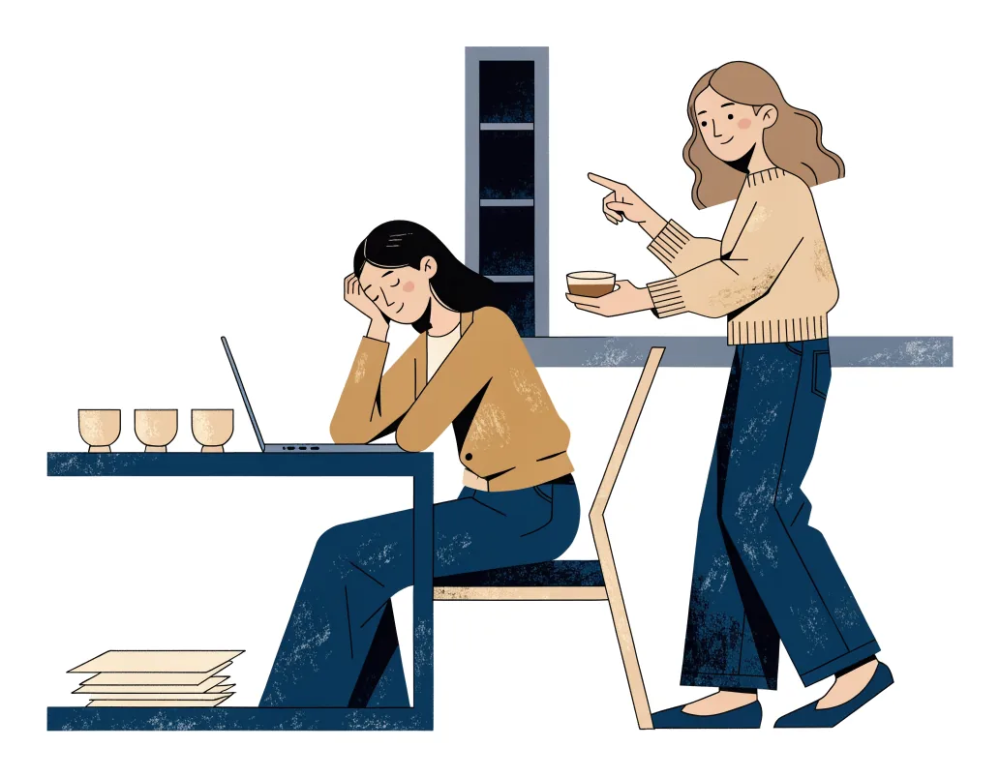
건강하게 사는 법은 다 알지만 그대로 살기는 어려워요. 시간이 있다면 운동을 할 텐데, 피곤한데도 잠이 안 오고, 쉬어야 하는데도 일을 해요. 이 과에서는 실제가 아닌 일을 가정하는 Wenn ich Zeit hätte, würde ich …를 배우고, obwohl과 trotzdem으로 반대되는 사실을 이어 말해요.
문법 Konjunktiv II: irreale Bedingungen (Wenn ich Zeit hätte, …), obwohl, trotzdem
과제대학시험 기간 스트레스 줄이는 법 조언하기
과제직장일과 휴식의 균형에 대해 동료와 이야기하기
이 과를 마치면 생활 습관을 말하고, 가정해서 말하고, 반대되는 사실을 이어서 말할 수 있어요.
이 과에서 쓸 말이에요. 눌러서 먼저 들어 보세요.
배우기 전에 먼저 해 보세요. 틀려도 괜찮아요.
Wenn ich Zeit hätte, würde ich schwimmen gehen.이라고 말하는 사람은 지금 시간이 있나요?
hätte와 würde는 실제가 아닌 일을 말해요.
Schönen Feierabend!는 언제 하는 인사일까요?
Feierabend는 일을 마친 뒤의 시간이에요.
Lektion 3의 낱말 다섯 개를 다시 떠올려 보세요.
11월의 일요일 저녁, WG예요. Jiu는 수요일까지 과제 두 개를 내야 하고, 어제는 하루 종일 카페에서 일했어요.
들으면서 찾아보세요. 두 사람은 오늘 저녁에 무엇을 하기로 하나요?
목요일 저녁 7시, 사무실이에요. 다른 사람들은 모두 퇴근했어요. Markus가 가방을 들고 Dohyun의 자리로 와요.
들으면서 찾아보세요. Markus는 누구와 이야기해 보라고 하나요?
화요일 오전, Dr. Neumann의 병원이에요. Sora가 건강 검진 결과를 들으러 왔어요.
들으면서 찾아보세요. 의사는 Sora에게 저녁 몇 시 뒤에는 공부하지 말라고 하나요?
세 대화를 듣고 답하세요.
Jiu는 요즘 몇 시간쯤 자나요?
Jiu geht im Moment jede Woche zum Yoga.
10월부터 한 번도 못 갔어요.
Jiu와 Lena는 오늘 저녁에 무엇을 하나요?
Dohyun은 왜 아직 사무실에 있나요?
Markus war vor drei Jahren sechs Wochen krank.
Markus는 누구와 이야기해 보라고 하나요?
의사는 저녁 몇 시 뒤에는 공부하지 말라고 하나요?
Sora isst abends beim Lernen viel Schokolade.
낱말 53개예요. 낱말이나 예문 앞의 단추를 누르면 소리가 나요. 명사는 der, die, das를 색으로 구분했어요.
die Gesundheit 건강
Die Gesundheit ist am wichtigsten.건강이 가장 중요해요.
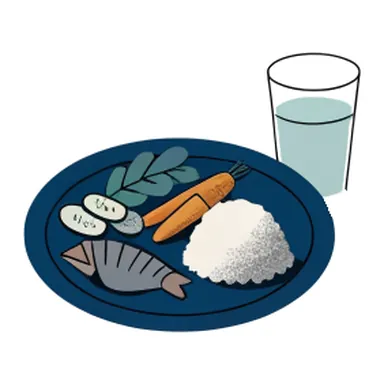
die Ernährung 식생활
Eine gesunde Ernährung ist wichtig.건강한 식생활이 중요해요.
sich ernähren (hat sich ernährt) (어떻게) 먹고 지내다
Ich ernähre mich gesund.저는 건강하게 먹어요.
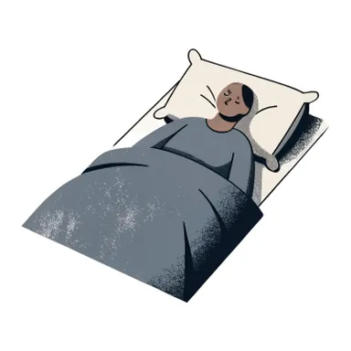
der Schlaf 잠
Ich brauche viel Schlaf.저는 잠을 많이 자야 해요.
ausschlafen (du schläfst aus, hat ausgeschlafen) 푹 자다
Am Sonntag schlafe ich aus.일요일에는 푹 자요.
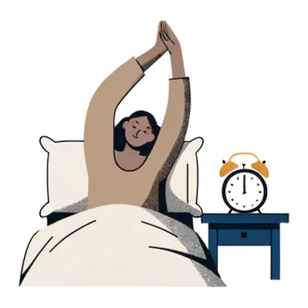
aufwachen (ist aufgewacht) 잠에서 깨다
Ich wache oft um vier Uhr auf.저는 자주 4시에 깨요.
sich erholen (hat sich erholt) 쉬면서 기운을 되찾다
Im Urlaub erhole ich mich.휴가 때 푹 쉬어요.
die Erholung 휴식
Der Körper braucht Erholung.몸은 쉬어야 해요.
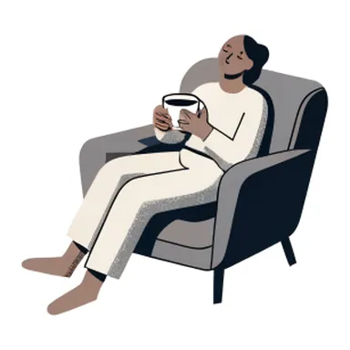
sich entspannen (hat sich entspannt) 긴장을 풀다
Beim Yoga entspanne ich mich.요가를 하면 긴장이 풀려요.
die Gewohnheit, die Gewohnheiten 습관
Das ist eine schlechte Gewohnheit.그건 나쁜 습관이에요.
abnehmen (du nimmst ab, hat abgenommen) 살이 빠지다
Ich habe drei Kilo abgenommen.3킬로 빠졌어요.
zunehmen (du nimmst zu, hat zugenommen) 살이 찌다
Im Winter nehme ich immer zu.겨울에는 늘 살이 쪄요.
verzichten auf (hat verzichtet) ~을 끊다, 하지 않다
Ich verzichte auf Zucker.저는 설탕을 끊었어요.
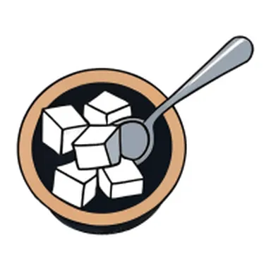
der Zucker 설탕
In dem Saft ist viel Zucker.그 주스에는 설탕이 많아요.
die Mahlzeit, die Mahlzeiten 끼니
Ich esse drei Mahlzeiten am Tag.저는 하루에 세 끼를 먹어요.
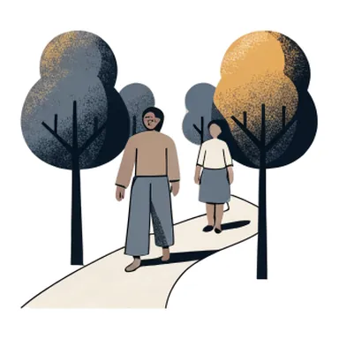
der Spaziergang, die Spaziergänge 산책
Wir machen einen Spaziergang.우리는 산책을 해요.
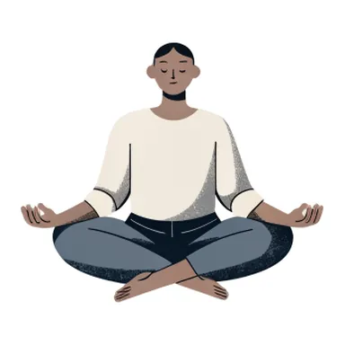
atmen (hat geatmet) 숨 쉬다
Atmen Sie tief!숨을 깊이 쉬세요!
die Luft 공기
Ich brauche frische Luft.바깥 공기를 쐬어야겠어요.
der Körper, die Körper 몸
Bewegung ist gut für den Körper.운동은 몸에 좋아요.
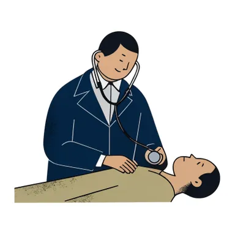
die Untersuchung, die Untersuchungen 검사, 진찰
Die Untersuchung dauert eine Stunde.검사는 한 시간 걸려요.
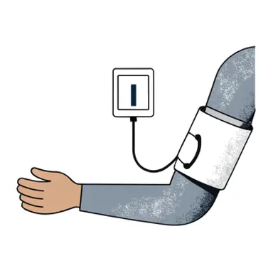
der Blutdruck 혈압
Mein Blutdruck ist normal.제 혈압은 정상이에요.
ungesund 건강에 나쁜
Zu viel Kaffee ist ungesund.커피를 너무 많이 마시면 건강에 나빠요.
der Stress 스트레스
Ich habe im Moment viel Stress.요즘 스트레스가 많아요.
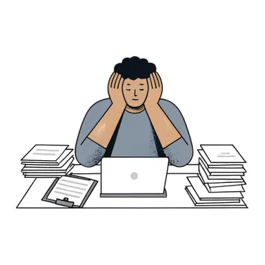
gestresst 스트레스를 받은
Vor der Prüfung bin ich gestresst.시험 전에는 스트레스를 받아요.
stressig 힘든, 스트레스를 주는
Die Woche war sehr stressig.이번 주는 정말 힘들었어요.
der Druck 압박
Ich stehe unter Druck.저는 압박을 받고 있어요.
die Belastung, die Belastungen 부담
Die Überstunden sind eine große Belastung.초과 근무가 큰 부담이에요.
erschöpft 지친
Du siehst erschöpft aus.지쳐 보여요.
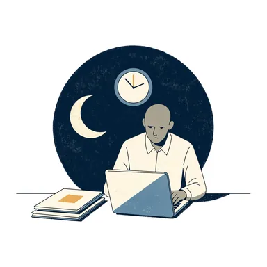
die Überstunde, die Überstunden 초과 근무
Ich mache zu viele Überstunden.저는 초과 근무를 너무 많이 해요.
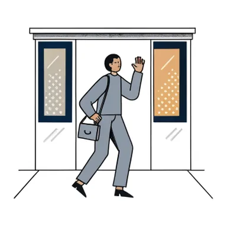
der Feierabend 퇴근, 일을 마친 뒤의 시간
Um sechs mache ich Feierabend.저는 6시에 퇴근해요.
abschalten (hat abgeschaltet) 일 생각을 끊다, 끄다
Am Wochenende kann ich nicht abschalten.주말에도 일 생각을 끊지 못해요.
erreichbar 연락이 닿는
Im Urlaub bin ich nicht erreichbar.휴가 때는 연락을 받지 않아요.
der Ausgleich 숨 돌릴 틈, 균형을 맞춰 주는 것
Sport ist ein guter Ausgleich.운동은 일과 균형을 맞추기에 좋아요.
die Klausur, die Klausuren (대학의) 시험
Nächste Woche schreibe ich drei Klausuren.다음 주에 시험을 세 개 봐요.
abgeben (du gibst ab, hat abgegeben) 내다, 제출하다
Ich muss das Projekt am Mittwoch abgeben.과제를 수요일에 내야 해요.
verteilen (hat verteilt) 나누다, 나눠 주다
Wir verteilen die Aufgaben im Team.우리는 팀에서 일을 나눠요.
sich Sorgen machen 걱정하다
Mach dir keine Sorgen!걱정하지 마요!
nervös 초조한
Vor Prüfungen bin ich immer nervös.시험 전에는 늘 초조해요.
die Laune 기분
Heute habe ich schlechte Laune.오늘은 기분이 안 좋아요.
die Energie 기운
Ich habe keine Energie mehr.이제 기운이 없어요.
übertreiben (hat übertrieben) 지나치게 하다
Übertreib es nicht!너무 무리하지 마요!
sich Zeit nehmen 시간을 내다
Ich nehme mir Zeit für einen Spaziergang.산책할 시간을 내요.
Wenn ich du wäre 내가 당신이라면
Wenn ich du wäre, würde ich mehr schlafen.제가 당신이라면 잠을 더 자겠어요.
eigentlich 원래는, 사실은
Eigentlich esse ich gesund.원래는 건강하게 먹어요.
sonst 그러지 않으면
Mach eine Pause, sonst wirst du krank.쉬어요. 그러지 않으면 병나요.
stattdessen 그 대신에
Trink keinen Kaffee. Trink stattdessen Tee.커피를 마시지 말고 그 대신 차를 마셔요.
wenigstens 적어도
Mach wenigstens zehn Minuten Pause.적어도 10분은 쉬어요.
mindestens 적어도 (수와 양)
Man sollte mindestens sieben Stunden schlafen.적어도 일곱 시간은 자는 게 좋아요.
selten 드물게
Ich mache selten Sport.저는 운동을 드물게 해요.
ab und zu 가끔
Ab und zu gehe ich schwimmen.가끔 수영하러 가요.
vernünftig 분별 있는, 맞는
Das klingt vernünftig.맞는 말 같아요.
schädlich 해로운
Rauchen ist schädlich.담배는 해로워요.
auch wenn ~하더라도
Ich gehe spazieren, auch wenn es regnet.비가 오더라도 산책을 가요.
이 과의 낱말로 여덟 문제를 풀어요.
줄을 누르면 소리가 나요. wenn 문장과 뒤 문장에 모두 hätte, wäre, würde 같은 모양을 써요.
줄을 누르면 소리가 나요. 왼쪽은 있을 수 있는 일이고 오른쪽은 실제가 아닌 일이에요.
규칙
지금 실제로는 그렇지 않은 일을 가정할 때 Konjunktiv II를 써요. wenn 문장에도, 뒤 문장에도 써요. haben은 hätte, sein은 wäre, können은 könnte, müssen은 müsste예요. 다른 동사는 würde와 Infinitiv로 말해요. wenn 문장에서는 동사가 끝에 오고, 뒤 문장은 동사로 시작해요.
| wenn 문장 | 뒤 문장 |
|---|---|
| Wenn ich Zeit hätte, | würde ich Sport machen. |
| Wenn ich du wäre, | würde ich mehr schlafen. |
| Wenn wir mehr Leute hätten, | müsste ich weniger arbeiten. |
| Wenn du Pausen machen würdest, | könntest du besser lernen. |
주의 순서를 바꿔도 돼요. Ich würde Sport machen, wenn ich mehr Zeit hätte. A2.2에서 배운 Ich würde gern …과 An deiner Stelle würde ich …도 같은 모양이에요. Wenn ich du wäre는 An deiner Stelle와 뜻이 같아요.
규칙을 보고 바로 확인해 보세요.
Wenn ich mehr Zeit …, würde ich schwimmen gehen. 빈칸에 알맞은 말은 무엇인가요?
규칙
wenn 문장에는 두 가지가 있어요. 실제로 있을 수 있는 일은 보통 모양으로 말해요. 시간이 날 때가 정말 있다는 뜻이에요. 실제가 아닌 일은 Konjunktiv II로 말해요. 지금은 시간이 없다는 뜻이에요. 동사의 모양이 그 차이를 알려 줘요.
| 뜻 | 보기 |
|---|---|
| 있을 수 있는 일 | Wenn ich Zeit habe, komme ich. |
| 실제가 아닌 일 | Wenn ich Zeit hätte, würde ich kommen. |
주의 한국어의 '~하면'은 두 뜻을 다 나타내요. 독일어로 말하기 전에 그 일이 실제로 있을 수 있는지 먼저 생각하세요. 바람을 말할 때도 이 모양을 써요. Ich hätte gern mehr Zeit. 시간이 더 있으면 좋겠다는 뜻이에요.
규칙을 보고 바로 확인해 보세요.
지금 시간이 없는 사람은 어떻게 말하나요?
규칙
obwohl은 A2.2에서 배웠어요. '~인데도'라는 뜻이고, 동사가 문장 끝에 와요. obwohl 문장에는 사실을 말하고, 다른 문장에는 그 사실에서 예상되지 않는 일을 말해요. weil과 견주면 뜻이 반대예요.
| 낱말 | 보기 |
|---|---|
| weil | Ich schlafe, weil ich müde bin. |
| obwohl | Ich schlafe nicht, obwohl ich müde bin. |
주의 auch wenn은 '~하더라도'예요. obwohl은 실제로 있는 일에, auch wenn은 있을지도 모르는 일에 써요. Ich gehe spazieren, auch wenn es regnet. 비가 올지 안 올지는 아직 몰라요.
규칙을 보고 바로 확인해 보세요.
… Sora gesund kocht, isst sie abends viel Schokolade. 빈칸에 알맞은 말은 무엇인가요?
규칙
trotzdem은 '그래도'예요. obwohl과 뜻은 같지만 문장 모양이 달라요. trotzdem은 예상과 다른 일을 말하는 문장에 들어가고, 문장 맨 앞에 오면 바로 뒤에 동사가 와요. 문장 가운데에 넣어도 돼요.
| 틀 | 보기 |
|---|---|
| Obwohl A, B. | Obwohl ich müde bin, lerne ich. |
| A. Trotzdem B. | Ich bin müde. Trotzdem lerne ich. |
| A, … trotzdem … | Ich bin müde, ich lerne trotzdem. |
주의 같은 내용을 두 가지로 바꿔 말해 보세요. Obwohl ich viel zu tun habe, mache ich eine Pause. Ich habe viel zu tun. Trotzdem mache ich eine Pause. obwohl 문장에는 사실이, trotzdem 문장에는 예상과 다른 일이 와요.
규칙을 보고 바로 확인해 보세요.
Ich habe viel zu tun. … mache ich um sechs Feierabend. 빈칸에 알맞은 말은 무엇인가요?
듣고 알맞은 것을 고르세요.
Sora는 지금 수영하러 가나요?
Wenn ich mehr Zeit hätte, würde ich schwimmen gehen.
Jiu는 어떤가요?
Obwohl ich sehr müde bin, kann ich nicht einschlafen.
Markus는 언제 퇴근하나요?
Seit drei Jahren mache ich um halb sechs Feierabend.
Lena는 무엇을 조언하나요?
Wenn ich du wäre, würde ich heute nichts mehr machen.
건강을 다루는 팟캐스트의 한 부분이에요. 듣고 답하세요.
Zwanzig Minuten für mich
Moderatorin Viele Menschen sagen: Wenn ich mehr Zeit hätte, würde ich mehr Sport machen. Aber stimmt das wirklich?
Moderatorin Für die Gesundheit reichen schon zwanzig Minuten Bewegung am Tag. Gehen Sie in der Mittagspause spazieren, obwohl Sie viel zu tun haben.
Moderatorin Am Nachmittag sind Sie dann wacher und können sich besser konzentrieren.
Moderatorin Und noch ein Tipp für den Abend: Schalten Sie das Handy eine Stunde vor dem Schlafen aus. Dann schlafen Sie schneller ein.
Wie viel Bewegung am Tag reicht schon?
점심시간에 무엇을 하라고 하나요?
Nach einem Spaziergang ist man am Nachmittag müder.
더 맑아지고 집중이 잘된다고 했어요.
Wann soll man das Handy ausschalten?
설문 결과를 전하는 글이에요. 읽고 답하세요.
Was würden Sie mit einer Stunde mehr tun?
Eine Krankenkasse fragte 1.000 Berufstätige: Was würden Sie tun, wenn Sie jeden Tag eine Stunde mehr Zeit hätten?
45 Prozent würden mehr schlafen. 30 Prozent würden Sport machen. 15 Prozent würden öfter selbst kochen. Nur 10 Prozent würden länger arbeiten.
Die meisten wissen also, was gesund ist. Trotzdem ändern nur wenige ihre Gewohnheiten.
Obwohl 80 Prozent sagen, dass Bewegung wichtig ist, machen nur 35 Prozent regelmäßig Sport.
Der Grund ist fast immer derselbe: keine Zeit.
Was würden die meisten mit einer Stunde mehr tun?
Zehn Prozent würden länger arbeiten.
Wie viele machen regelmäßig Sport?
Die meisten wissen nicht, was gesund ist.
거의 다 알지만 습관을 바꾸지 않아요.
사람들이 드는 이유는 무엇인가요?
뒤 문장이에요. 알맞은 모양을 고르세요.
Wenn ich mehr Zeit hätte, ich Sport machen.
시간이 더 있으면 운동을 할 텐데요.
Wenn ich du wäre, ich früher ins Bett gehen.
제가 당신이라면 더 일찍 자겠어요.
Wenn du weniger Kaffee trinken würdest, du besser schlafen.
커피를 덜 마시면 잠을 더 잘 잘 수 있을 거예요.
Wenn wir mehr Leute hätten, ich nicht so viel arbeiten.
사람이 더 있으면 제가 이렇게 많이 일하지 않아도 될 텐데요.
Wenn ich weniger Stress hätte, ich entspannter.
스트레스가 적으면 더 느긋할 텐데요.
Wenn Sie früher schlafen gehen würden, Sie mehr Energie.
더 일찍 주무시면 기운이 더 날 거예요.
wenn 문장이에요. 실제가 아닌 일을 말해요. 알맞은 모양을 고르세요.
Wenn ich mehr Zeit , würde ich schwimmen gehen.
시간이 더 있으면 수영하러 갈 텐데요.
Wenn ich du , würde ich mit der Chefin sprechen.
제가 당신이라면 팀장과 이야기하겠어요.
Wenn Sora nicht so viel lernen , würde sie mehr schlafen.
Sora는 공부를 그렇게 많이 하지 않아도 되면 잠을 더 잘 텐데요.
Wenn wir die Arbeit besser verteilen , hätte Dohyun weniger Stress.
일을 더 잘 나누면 Dohyun의 스트레스가 줄 텐데요.
Wenn es nicht so kalt , würden wir länger spazieren gehen.
이렇게 춥지 않으면 더 오래 산책할 텐데요.
obwohl, trotzdem, weil 가운데 알맞은 것을 고르세요.
ich müde bin, kann ich nicht einschlafen.
피곤한데도 잠이 안 와요.
Ich habe viel zu tun. mache ich pünktlich Feierabend.
할 일이 많아요. 그래도 제때 퇴근해요.
Dohyun hat Rückenschmerzen, er den ganzen Tag sitzt.
Dohyun은 하루 종일 앉아 있어서 허리가 아파요.
Sora isst abends Schokolade, sie eigentlich gesund lebt.
Sora는 원래 건강하게 사는데도 저녁에 초콜릿을 먹어요.
Es regnet, wir gehen spazieren.
비가 와요. 우리는 그래도 산책을 가요.
Markus viel Arbeit hat, geht er um halb sechs nach Hause.
Markus는 일이 많은데도 5시 반에 집에 가요.
낱말을 순서대로 눌러 문장을 만드세요.
시간이 있으면 운동을 할 텐데요.
제가 당신이라면 잠을 더 자겠어요.
피곤한데도 잠이 안 와요.
피곤해요. 그래도 요가에 가요.
어떻게 하면 좋을까요?
뜻이 반대인 말을 짝지으세요.
빈칸에 알맞은 낱말을 쓰세요.
Um sechs mache ich .
저는 6시에 퇴근해요.
Ich mache zu viele .
저는 초과 근무를 너무 많이 해요.
Mach dir keine !
걱정하지 마요!
Du siehst aus.
지쳐 보여요.
듣고 그대로 써 보세요.
Wenn ich Zeit hätte, würde ich schwimmen gehen. 시간이 있으면 수영하러 갈 텐데요.
Obwohl ich müde bin, kann ich nicht einschlafen. 피곤한데도 잠이 안 와요.
Wenn ich du wäre, würde ich mehr schlafen. 제가 당신이라면 잠을 더 자겠어요.
Ich schlafe im Moment nur fünf Stunden. 요즘 다섯 시간밖에 못 자요.
Ich ernähre mich eigentlich gesund. 원래는 건강하게 먹어요.
Ich mache selten Sport. 저는 운동을 드물게 해요.
Ich kann abends nicht abschalten. 저녁에 일 생각을 끊지 못해요.
Wenn ich mehr Zeit hätte, würde ich Sport machen. 시간이 더 있으면 운동을 할 텐데요.
Wenn ich weniger arbeiten würde, hätte ich mehr Energie. 일을 덜 하면 기운이 더 날 텐데요.
Was würdest du tun, wenn du mehr Zeit hättest? 시간이 더 있으면 무엇을 하겠어요?
Ich hätte gern mehr Zeit für mich. 저를 위한 시간이 더 있으면 좋겠어요.
Obwohl ich müde bin, kann ich nicht einschlafen. 피곤한데도 잠이 안 와요.
Ich habe viel zu tun. Trotzdem mache ich eine Pause. 할 일이 많아요. 그래도 쉬어요.
Ich gehe spazieren, auch wenn es regnet. 비가 오더라도 산책을 가요.
Eigentlich weiß ich, dass das ungesund ist. 그게 건강에 나쁘다는 건 사실 알아요.
Wenn ich du wäre, würde ich früher ins Bett gehen. 제가 당신이라면 더 일찍 자겠어요.
Du solltest mindestens sieben Stunden schlafen. 적어도 일곱 시간은 자는 게 좋아요.
Mach wenigstens eine kurze Pause. 적어도 잠깐은 쉬어요.
Trink stattdessen Tee. 그 대신 차를 마셔요.
Du siehst erschöpft aus. 지쳐 보여요.
Ich mache mir Sorgen um dich. 당신이 걱정돼요.
Mach dir keine Sorgen, du schaffst das. 걱정하지 마요, 해낼 거예요.
Übertreib es nicht! 너무 무리하지 마요!
과제 고르기
역할 대화와 말하기, 쓰기 과제는 대학 생활과 직장 생활 두 가지예요. 하나를 고르면 다음 과에서도 그쪽 과제가 나와요. 언제든 바꿀 수 있어요.
대화 A에서 역할을 하나 고르세요. 상대의 말은 음성으로 나오고, 내 차례에는 직접 말해요.
대화 B에서 역할을 하나 고르세요. 상대의 말은 음성으로 나오고, 내 차례에는 직접 말해요.
내 생활을 떠올리고 칸을 채우세요. 완성된 문장을 소리 내어 읽어 보세요.
Wenn ich mehr Zeit hätte, würde ich öfter schwimmen gehen.
Das ist ungesund, trotzdem mag ich es: zu viel Kaffee.
Das tut mir gut: ein Spaziergang am Abend.
Ab morgen möchte ich früher ins Bett gehen.
같은 과 친구가 다음 주에 시험을 세 개 봐요. 잠을 다섯 시간밖에 못 자고 커피를 하루에 여섯 잔 마셔요. 친구의 말을 듣고 조언해요.
이렇게 조언하려고 해요. 더 일찍 자기, 오후에는 커피 대신 차 마시기, 날마다 20분 산책하기, 쉬어 가면서 공부하기.
친구가 힘든 점을 말해요. 쪽지를 보고 조언하세요. 말을 듣고 소리 내어 답한 뒤 예시 답과 비교해 보세요.
Ich habe nächste Woche drei Klausuren und schlafe nur fünf Stunden. 다음 주에 시험이 세 개인데 다섯 시간밖에 못 자요.
Das ist zu wenig. Wenn ich du wäre, würde ich früher ins Bett gehen.
Aber dann habe ich weniger Zeit zum Lernen. 그럼 공부할 시간이 줄어요.
Wenn du mehr schlafen würdest, könntest du dich besser konzentrieren.
Ich trinke sechs Tassen Kaffee am Tag. 커피를 하루에 여섯 잔 마셔요.
Das ist ungesund. Du solltest nachmittags stattdessen Tee trinken.
Und ich sitze den ganzen Tag am Schreibtisch. 그리고 하루 종일 책상 앞에 앉아 있어요.
Mach jeden Tag einen Spaziergang. Zwanzig Minuten reichen.
Und wenn ich trotzdem durchfalle? 그래도 떨어지면요?
Mach dir keine Sorgen. Wenn du Pausen machst, lernst du sogar besser.
Tipps gegen Prüfungsstress
시험 때문에 힘들어하는 친구에게 조언하는 메시지를 써 보세요. 일곱 문장쯤 써요.
Liebe Paula, es tut mir leid, dass du so gestresst bist. Wenn ich du wäre, würde ich zuerst einen Plan für die Woche machen. Du solltest mindestens sieben Stunden schlafen, obwohl du viel zu tun hast. Wenn du nachmittags keinen Kaffee trinken würdest, könntest du besser einschlafen. Mach jeden Tag einen kurzen Spaziergang, auch wenn es regnet. Wenn du Lust hast, gehen wir am Mittwoch zusammen zum Yoga. Du schaffst das! Viele Grüße, Minji
다 쓴 뒤에 확인해 보세요.
저녁 7시인데 아직 사무실에 있어요. 제안서를 끝내야 해서 2주째 초과 근무를 하고 있어요. 동료가 와서 물어요.
집에서도 일 생각을 끊지 못해요. 주말에도 메일을 읽어요. 일이 적으면 다시 운동을 하고 일찍 자고 싶어요. 팀에서 일을 더 잘 나누면 좋겠어요. 아직 팀장과 이야기하지 않았어요.
동료가 물어요. 쪽지를 보고 답하세요. 질문을 듣고 소리 내어 답한 뒤 예시 답과 비교해 보세요.
Du bist ja immer noch im Büro. Warum? 아직도 사무실에 있네요. 왜요?
Ich muss ein Angebot fertig schreiben. Es ist schon die zweite Woche mit Überstunden.
Kannst du zu Hause abschalten? 집에서는 일 생각을 끊을 수 있어요?
Leider nicht. Obwohl ich frei habe, lese ich am Wochenende meine E-Mails.
Was würdest du tun, wenn du weniger Arbeit hättest? 일이 적으면 무엇을 하겠어요?
Ich würde wieder regelmäßig Sport machen und früher schlafen gehen.
Hast du schon mit der Chefin gesprochen? 팀장과 벌써 이야기했어요?
Noch nicht. Aber wenn wir die Aufgaben besser verteilen würden, hätte ich weniger Stress.
An deiner Stelle würde ich das morgen ansprechen. 저라면 내일 그 이야기를 꺼내겠어요.
Du hast recht. Ich spreche morgen mit ihr und mache heute pünktlich Feierabend.
Eine Bitte um ein Gespräch
팀장에게 일이 너무 많다는 것을 알리고 이야기할 시간을 부탁하는 메일을 써 보세요. 여섯 문장쯤 써요.
Sehr geehrte Frau Hoffmann, ich würde gern mit Ihnen über meine Arbeit sprechen. In den letzten drei Wochen habe ich jeden Tag Überstunden gemacht, weil das Angebot für Hamburg fertig sein musste. Obwohl mir die Arbeit Spaß macht, bin ich im Moment sehr erschöpft. Wenn wir die Aufgaben im Team besser verteilen würden, könnte ich mich besser konzentrieren. Hätten Sie diese Woche eine halbe Stunde Zeit für ein Gespräch? Vielen Dank. Mit freundlichen Grüßen, Minji Choi
다 쓴 뒤에 확인해 보세요.
Ich kann über Schlaf, Ernährung und Bewegung sprechen.잠, 식사, 운동에 대해 말할 수 있어요.
Ich kann sagen, was ich tun würde, wenn etwas anders wäre.사정이 다르다면 무엇을 할지 말할 수 있어요.
Ich kann mit obwohl und trotzdem sagen, was nicht zusammenpasst.obwohl과 trotzdem으로 서로 맞지 않는 사실을 말할 수 있어요.
Ich kann jemandem bei Stress Ratschläge geben.스트레스를 받는 사람에게 조언할 수 있어요.